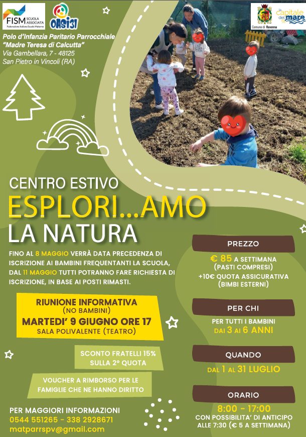
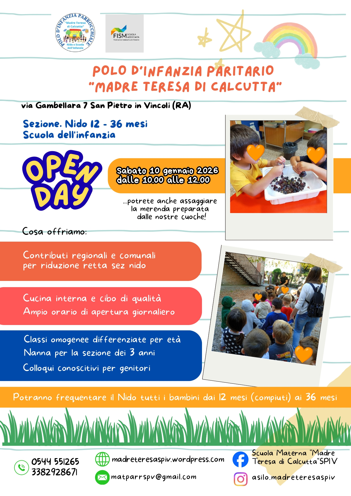

Crescere con gioia, ogni giorno
Nido e Scuola dell'Infanzia parrocchiale paritaria a San Pietro in Vincoli. Un ambiente accogliente dove ogni bambino è accolto, ascoltato e valorizzato.
📍 Via Gambellara, 7 — San Pietro in Vincoli (RA)
Il Nido
Un ambiente sicuro e stimolante dove i più piccoli iniziano a esplorare il mondo, con educatrici dedicate e spazi pensati su misura.
Scopri il Nido 3 – 6 anniLa Scuola dell'Infanzia
Un percorso educativo di ispirazione cristiana che accompagna i bambini verso la scuola primaria, con laboratori, musica e attività creative.
Scopri la ScuolaUn ambiente pensato per crescere insieme
Cucina interna
Pasti freschi preparati ogni giorno nella nostra cucina, secondo le tabelle dietetiche AUSL.
Giardino e spazi verdi
Ampio cortile esterno per giocare all'aperto e scoprire la natura in ogni stagione.
Inclusione e accoglienza
Attenzione particolare ai bambini con disabilità, BES e a tutte le famiglie.
Bonus Nido INPS
Supporto alle famiglie per l'accesso ai contributi regionali, comunali e al Bonus Nido.
Orari flessibili
Apertura dalle 07:30 con possibilità di prolungamento pomeridiano su richiesta.
Continuità educativa
Nido e Infanzia nello stesso plesso, per un passaggio armonico e senza strappi.
Avvisi e comunicazioni

Iscrizioni aperte al Centro Estivo 2026 "Esplori...amo la natura!!!"
Un'estate all'insegna dell'esplorazione per i bambini iscritti a Nido e Infanzia.

Open Day A.S. 2026/2027 — grazie a tutte le famiglie!
Un pomeriggio di visita, conoscenza e merenda insieme alle nostre cuoche.
Bonus Nido d'infanzia 2026/2027: come richiederlo
Informazioni, requisiti e supporto della Segreteria per la domanda INPS.
Iscrizioni Aperte 2026/2027
Tre semplici passi per iniziare il percorso di crescita di tuo figlio con noi.
Prenota una visita conoscitiva
Scarica e compila i moduli
Consegna in Segreteria